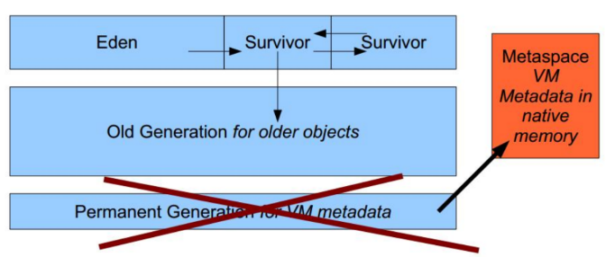
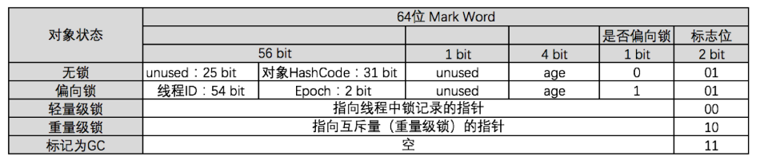

内存区域划分及内存溢出异常
运行时数据区域
程序计数器
- 当前线程所执行字节码的行号指示器
- 在虚拟机的概念模型里，字节码解释器工作时就是通过改变这个计数器的值来选取下一条需要执行的字节码指令，分支、循环、跳转、异常处理、线程恢复等基础功能都需要依赖这个计数器完成
- 如果执行Java方法，计数器记录的是正在执行的虚拟机字节码指令地址
- 如果执行Native方法，计数器值为空（Undefined）
- 唯一没有规定任何OutOfMemoryError情况的区域
Java虚拟机栈
- 线程私有且与线程具有相同的生命周期
- 用于存储局部变量表、操作数栈、动态链接、方法出入口等信息
- 局部变量表
- 编译器可知的各种基本类型数据：boolean、byte、char、int等
- 对象引用：reference类型，而非对象本身
- retrunAddress类型：指向一条字节码指令的地址
- 局部变量表
- 两种异常情况
- StackOverflowError
- OutOfMemoryError：扩展时无法申请到足够的内存
Java堆
- 所有线程共享，在虚拟机启动时创建
- 此内存区域的唯一目的就是存放对象实例，几乎所有的对象实例都在这里分配，随着JIT编译器的发展和逃逸分析技术的成熟，栈上分配、标量替换优化技术会导致一些变化
- 垃圾收集器管理的主要部分，两种维度划分，细分为新生代、老年代；划分出多个线程私有的分配缓存区（Thread Local Allocation Buffer,TLAB）。划分的主要目的就是更好的分配和回收内存
- 一种异常OutOfMemoryError：
-Xmx<size>最大java堆大小,-Xms<size>初始java堆大小
方法区
- 所有线程共享
- 存储已被虚拟机加载的类信息、常量、静态变量、即时编译器编译后的代码等数据，常量池，存放编译器生成的各种字面量和符号引用
- 在HotSpot虚拟机上使用永久代实现方法区，在JDK7及以下通过
-XX:MaxPermSize=<size>设置永久代最大值，溢出后抛出：java.lang.OutOfMemoryError: PermGen space
JDK8取消了永久代而采用元空间（MetaSpace）
为什么？
1、由于永久代不够用或者内存泄露，爆出异常java.lang.OutOfMemoryError: PermGen space
2、类及方法的信息比较难确定其大小，永久代指定太小容易溢出，指定太大容易导致老年代溢出
3、永久代会为GC带来不必须要的复杂度，而且回收效率低
4、Oracle可能会将HotSpot和JRockit合二为一
采用MetaSpace

常用配置参数
- MetaspaceSize：初始MetaspaceSize大小，默认值根据不通平台在12M到20M浮动
- MaxMetaspaceSize：Metaspace最大值，防止Metaspce增长的上限
- MinMetaspaceFreeRatio：在进行Metaspace GC后会计算空闲占比，如果空闲占比比这个小，就需要增大Metaspace空间大小。太小可能会需要一直分配，太大会导致内存浪费。默认值40。
- MaxMetaspaceFreeRatio：空闲空间最大占比（默认值70）
- MaxMetaspaceExpansion： Matespace增长时的最大幅度
直接内存
- 不是虚拟机运行时数据区的一部分，有不是Java虚拟机规范中定义的内存区域
- NIO中通过DirectByteBuffer操作Native在堆外分配的内存
- 受本机内存总内存的限制，抛出OutOfMemoryError异常，通过
-XX:MaxDirectMemorySize=<size>指定，如果没指定者默认与java堆最大值（-Xmx）一样
HotSpot对象
对象的创建
1、当虚拟机遇到一条new指令时，首先检查这个指令的参数是否能在常量池中定位到一个类的符号引用，并检查这个符号引用代表的类是否已被加载、解析和初始化，如果没有被加载，则执行类的加载过程
2、为对象分配内存
- 如何分配？取决是内存是否规整，而堆内存是否规整，由所采用的垃圾收集器是否带有压缩功能决定
- 指针碰撞：内存是规整的，移动空闲与非空闲的指针指示器
- 空闲列表：内存非规则的，从空闲列表中选中一块空间
- 分配时的并发安全，有以下两种方式
- 分配内存空间的动作进行同步处理：CAS+失败重试
- 每个线程预先分配一小块内存，Thread Local Allocation Buffer，TLAB，线程私有，线程的对象在自己的TLAB上分配
- 通过
-XX:+/-UseTLAB设置 - TALB是分配在Eden区，管理三个指针，start、top、end
- 如果分配时出现空间不够，就再分配一块TLAB，老的就不用管了
- 通过
3、对象头设置：对象是哪个类的实例Class Word、类的元数据信息、对象的哈希码、对象GC年龄、是否偏向锁等
4、对象<init>
对象的内存布局
字宽（Word）：内存大小的单位概念，在32位虚拟机中1 Word = 4 Bytes，在64位虚拟机中1 Word = 8 Bytes 。
对象的组成
- 对象头
- Mark Word
- 存储对象自身的运行时数据，如哈希码，GC分代年龄，锁状态标志，线程持有的锁，偏向线程ID，偏向时间戳等
- 
- Class Word
- 类型指针：指向它的类元数据的指针，虚拟机通过这个指针来确定他是哪个类的实例
- 并不是所有的虚拟机实现都必须在对象数据上保留类型指针？？查找对象的元数据信息并不一定要经过对象本身
- 数组长度（可选）
- 如果对象是一个java数组，该字段用来记录数组长度（个人认为应该是通过对象的元数据里面的记录来判断对象是否是数组）
- 因为普通的java对象，根据元数据就可以确定对象的大小，但元数据无法确定数组的大小
- Mark Word
- 对象体
- 存放对象的各个属性，无论是从父类继承的，还是在子类中定义的；
- 存储顺序受到虚拟机分配策略和在java源码中的定义顺序影响。hotSpot默认策略：
- longs/doubles、ints、shorts/chars、bytes/booleans、对象
- 先父类后之类
- 字节对齐
- 统一按照8字节对齐（对象头正好是8字节的整数倍）
对象的访问定位
解决的问题：通过栈上的reference找到堆上的具体对象。由于GC的原因对象会被移动。两种方式：
1、句柄
优点：reference中存储的是稳定的句柄地址，在对象被移动时只会改变句柄中的实例数据指针
缺点：存在两次指针定位
2、直接指针（HotSpot采用这种方式）
优点：速度快，只有一次指针定位
缺点：对象在移动时也需要更新栈上的reference地址
OutOfMemoryError
堆溢出
堆溢出后报错java.lang.OutOfMemoryError : java heap space。分析方法：dump内存，通过工具查看GC Roots的引用链，分析是否存在内存泄露。如果不存在内存泄露，检查堆参数-Xmx -Xms设置是否合理；从代码上检查是否存在某些对象生命周期过长、持有状态时间过长的情况（设计是否合理）。
Heap Dump
Heap Dump是一个java进程在某个时间点上的内存快照，通常写Heap Dump文件前会触发一次FullGC 。通过下面两种方式获取：
1、通过jmap -dump:format=b,file=dump.bin pid获取
2、通过配置JVM参数当OutOfMemory时自动获取，-XX:+HeapDumpOnOutOfMemoryError -XX:HeapDumpPath=dump.bin
虚拟机栈和本地方法栈溢出
溢出后报错StackOverflowError。
- 通过
-Xss调整单个线程的栈大小 - 操作系统分配给每个进程的内存是有限制的，比如32为Windows限制为2G
- 虚拟机栈和本地方法栈空间 = 操作系统分配最大值 - 堆最大值Xmx - 方法区最大值（MaxPermSize） - 程序计数器（很小，可忽略）
- 注意，这是基于1.7的，从1.8开始方法区已经使用直接内存Metaspace
- JVM最大内存：首先JVM内存限制于实际的最大物理内存，假设物理内存无限大的话，JVM内存的最大值跟操作系统有很大的关系。简单的说就32位处理器虽然可控内存空间有4GB，但是具体的操作系统会给一个限制，这个限制一般是2GB-3GB（一般来说Windows系统下为1.5G-2G，Linux系统下为2G-3G），而64bit以上的处理器就不会有限制了
- 如果是建立过多的线程导致的内存溢出，在不能减少线程数或者更换64为虚拟的情况下，就只能通过减少最大堆和减少栈容量来换取更多的线程
- 往往出现这个问题的原因就是栈太深，比如递归太深
- 因为java的线程是映射到操作系统上的，如果线程分配的过多，可能会造成操作系统僵死
方法区和运行时常量池的溢出
溢出后报错OutOfMemoryError: PermGen space。
- 1.7之前：
-XX: PermSize -XX: MaxPermSize - 1.8开始：
-XX:MetaSpaceSize -XX:MaxMetaSpaceSize
直接本机内存溢出
- 可以通过
-XX:MaxDirectMemorySize指定，如果不指定，则默认与Java堆最大值（-Xmx指定）一样 - 通过DirectByteBuffer使用直接内存
- 由DirectMemory导致的内存溢出，一个明显的特征是在Heap Dump文件中不会看见明显的异常，如果发现OOM之后的Dump文件很小，而程序中又直接或间接使用了NIO，那就可以考虑检查一下这方面的原因